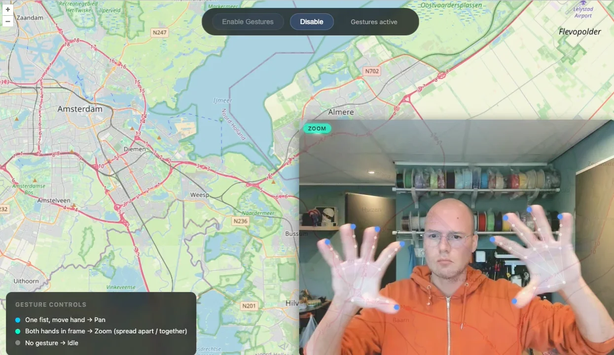

demo
map gestures
Map Gesture Controls
Zoom and pan maps with hand gestures. Make a fist to pan, spread two open hands to zoom. Powered by MediaPipe hand tracking, runs entirely in the browser. No backend, no touch, no mouse.